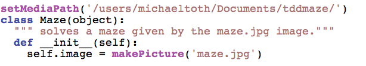
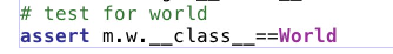

| Create the code to make the image test pass. You will
need to use your own media path where you downloaded the maze image
from Blackboard. |
 |
| We are using the JES turtle environment so we need to create
a 'world' which is the construct for the turtles platform. |
 |